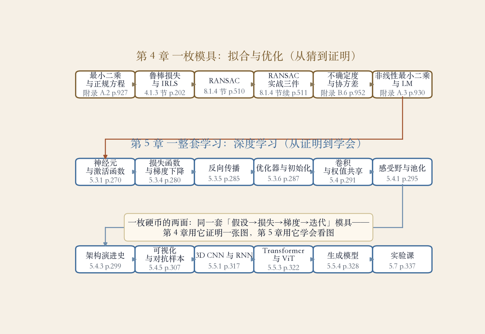

复盘课 · 第 4、5 章
拟合与学习：同一套四步
第 4 章讲显式模型怎么拟合。
第 5 章讲网络怎么学习。
两章都用四步：假设、损失、迭代、检验。
先走模具链，再走学习链。
依据：原书第 191、235 页
本集路线
模具链六站：最小二乘到 LM
学习链十二站：神经元到实验课
最后两章对账
正课第四十六集
01 / 9
全景图 · 模具链六站 + 学习链十二站 · 本图系程序生成
一张图：两章十八站
上面一排六站，是第 4 章的模具链。
下面两排十二站，是第 5 章的学习链。
中间那座桥：从拟合跨到学习。
每一站都挂着原书的页码。
依据：程序生成实验

两章全景：模具链六站与学习链十二站，中间是拟合到学习的桥｜程序生成，未用教材或论文原图
正课第四十六集
02 / 9
第 4 章 · 原书第 191 页起
模具链：从猜到证明
最小二乘：正规方程直接解出参数。
鲁棒损失：Huber 加迭代重加权。
兰萨克：抽样投票，三个参数一起定。
不确定度与 LM：协方差、泰勒加阻尼。
依据：原书第 927、930 页；附录与 8.1.4 节
六站与页码
最小二乘 p.927 → 鲁棒损失
兰萨克 p.510 → 实战三件 p.511
不确定度 p.952
LM p.930
正课第四十六集
03 / 9
第 5 章 · 原书第 235 页起
学习链开篇：模具重演
第一步假设一个网络：加权求和加激活。
没有激活，叠一百层也塌成一层。
定损失：从均方误差到交叉熵。
反向传播求梯度，优化器迭代更新。
依据：原书第 235 页；第 5 章 5.3 节
剩下三步
定损失
求梯度
迭代更新
再加初始化
正课第四十六集
04 / 9
第 5 章 · 为图像而生的归纳偏置
卷积与架构：为图像设计
卷积：小核扫全图，权值处处复用。
参数只和核大小、通道数有关。
感受野随层数扩大，池化看全局。
AlexNet、VGG、GoogLeNet、ResNet 接力。
依据：原书第 291、295、299 页
两件事
权值共享省参数
架构设计解短板
正课第四十六集
05 / 9
第 5 章 · 看懂网络与走向通用
看懂与走远：注意力合流
可视化看第一层权重和最大激活图。
对抗样本：一张贴纸就能骗过分类器。
自监督：没有标签，自己出题自己学。
三维卷积、循环网络、Transformer 与 ViT。
依据：原书第 307、317、322 页
两步走远
时间与序列
自注意力看全局
正课第四十六集
06 / 9
第 5 章 · 生成模型与实验课
造图与对账
自编码器：编码压缩，解码还原。
VQ-VAE：编码加离散码本。
GAN：生成器与判别器对着练。
实验课：十九题，十八集共二百九十三条断言。
依据：原书第 328、337 页
两条线
认图考判别力
造图考理解力
正课第四十六集
07 / 9
复盘对账 · 两章互证
四步模具：两面合一
第 4 章：假设、损失、迭代、检验都显式。
第 5 章：假设换成网络，检验交给验证集。
置信度和泛化，都在问结论可不可信。
拟合和学习，是同一种做法的两个尺度。
依据：原书第 191、235 页
同一套四步
假设
损失
迭代
检验
正课第四十六集
08 / 9
移交 · 第 6 章 Recognition
模具带走，考题升级
两章串成一张网，四步可以带走。
下一章：不只分类，还要认出谁是谁。
人脸、行人、街景，都要认出来。
原书第 6 章，识别。
依据：原书第 343 页（第 6 章章首）
移交
第 6 章 Recognition
从整张图到每个对象
正课第四十六集
09 / 9